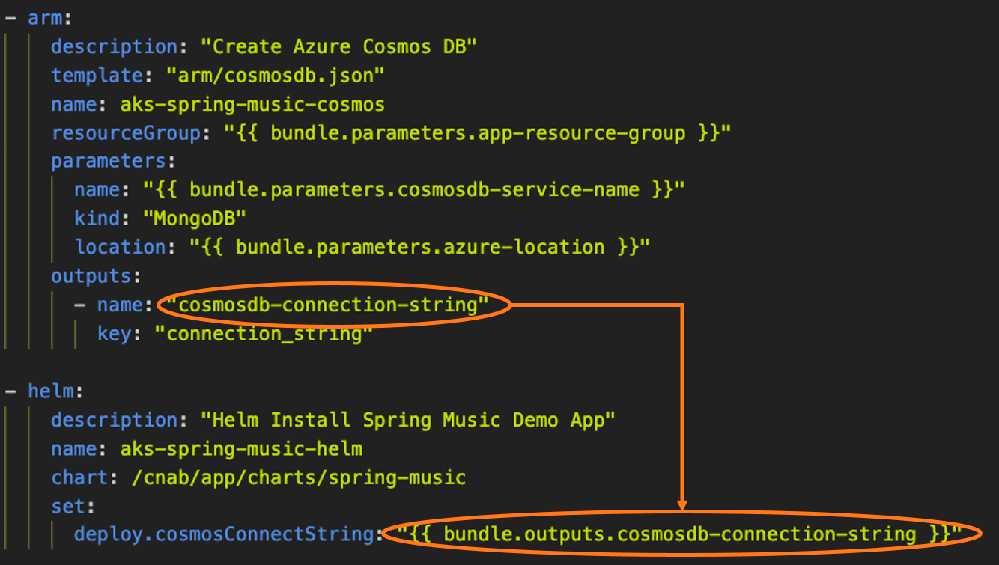

The Devil is in the Deployments
Carolyn Van Slyck
Principal Software Engineer at Microsoft
Maintainer of the CNAB Specification
Co-creator of Porter
Overview
- What is CNAB?
- What problem does it solve?
- When bundles may help
- When they probably won't
Cloud Native Application Bundle Specification (CNAB)

What Problems Do Bundles Solve?
- Package deployments into a versioned distributable artifact
- Reduce complexity of deployments for the people running them
- Provide tools and workflows for secure, tamper-proof deployments
What is Porter?

Package your application, deployment tools, configuration and deployment logic together as a versioned bundle that you can distribute, and then install with a single command! 🎩✨
What does it look like to use a bundle?
Bundle! Explain yourself
$ porter explain --tag myorg/myapp:v1.17.1
Name: myapp
Description: A really good application
Version: v1.17.1
Credentials:
Name Description Required
kubeconfig A kubeconfig with cluster admin true
No parameters defined
No outputs defined
Actions:
Name Description Modifies Installation Stateless
maintenance-mode Pauses the app and puts up a cute sign true false
Install
$ porter install staging-app --tag myorg/myapp:v1.17.1 --cred staging
Upgrade
$ porter upgrade staging-app --param feature-flag=on --cred staging
Custom Action
$ porter invoke staging-app --action maintenance-mode --cred staging
What does a bundle look like?
What does a bundle look like?
How can bundles help?

Bundles have everything they need to deploy
packaged inside, including client tools
Example: Create and configure a new team cluster
- Create a cluster with kubeadm, aws, az, gcloud...
- Create a team secret store with vault, aws, aws, gcloud...
- Install Kubernetes Secrets Store CSI with helm

Bundles encapsulate the deployment logic
Example: Create and configure a new team cluster
- Clone a repository? The app's or a devops one?
- Set environment variables, and save config files to specific locations?
- Call multiple helm and terraform commands?
- Or a custom script?
- Or a utility docker container with a bunch of flags?
Every app's deployment is a snowflake ❄️
$ porter install staging-app --tag myorg/myapp:v1.17.1 --cred staging
Bundles manage credentials securely
Example: Create and configure a new team cluster
- Read docs to know what credentials are required
- Use local environment variables, files or if lucky a remote secret store
- Specify credentials differently based on tools used
- Cleanup local machine after deployment
Credential Lifecycle
porter explainlists credentials required by the bundleporter credentials generatefigures out where to find themporter installinjects credentials just-in-time into the running bundle
Bundles can jump an airgap

$ porter archive myapp.tgz --tag staging/myapp:v1.17.1
# physically move myapp.tgz across airgap
$ porter publish --archive myapp.tgz --tag production/myapp:v1.17.1
Bundles provide metadata
- Bundle Definition
- Name
- Version
- Parameters/Credentials
- Dependencies
- Outputs
- Bundle Execution
- What is installed
- Audit History
- Deployment durations, e.g. myapp takes 2 minutes to deploy
- Parameters used during the last deployment
Porter's declarative syntax that provides more metadata
- Mixins: terraform, helm, kubectl, exec...
- Commands, arguments and flags
- Parameters and credentials
When would you skip bundles?

Single Stack and Satisfied
- Aren't creating your cluster or infrastructure
- Aren't making multiple helm calls or using other tools
- Aren't collecting outputs and using it as input to another command
$ helm install staging-app myorg/myapp -f vars.yaml
🤷♀️
$ porter install staging-app -t myorg/myapp:v1.17.1 -p myapp -c staging
Windows is Complicated Right Now
👍 Bundles can run on Windows
👎 Bundles currently only support linux containers
🚗 Windows container support is on our roadmap
Bundles In Review
- Contain everything you need to deploy: artifacts, tools, logic
- Manage credentials securely
- Supports airgap deployments
- Metadata gives your organization insight and control
Resources
- Try it out @ porter.sh
- Ask questions @ porter.sh/community
- Read the spec @ cnab.io
Thank you!